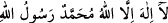
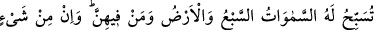
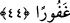

çıkardı ki bu “__WORD__ Lâ ilâhe illallah Muhammedü’r-Rasûlullah”
kelime-i tayyibesidir. Bunun üzerine arş, Allah ilk mahlûku yaratıp ona kelime-i tevhidi
emredip o da “Lâ ilâhe illallah Muhammedü’r-Rasûlullah” deyinceye kadar 124000
sene sakinleşti.
İlk yaratılan “Lâ ilâhe illallah Muhammedü’r-Rasûlullah” deyince arş yine titredi
ve sallandı. Allah “sakin ol” dedi. Bunun üzerine arş “Sen bu sözü söyleyeni
bağışlamadığın sürece nasıl sakin olurum?” dedi. Allah:
“Sen sakin ol. Ben seni yaratmadan bin sene önce kullarımdan biri bu sözü söylediği
takdirde onu bağışlayacağıma dâir yemin ettim.” buyurdu. Allah’tan af ve mağfiret
dileriz!
44 Yedi gök, yer ve bunlarda bulunanlar O’nu tesbih eder. O’nu övgü ile tesbih
etmeyen hiçbir şey yoktur. Ne var ki siz, onların tesbihini anlamazsınız. O, halîmdir,
bağışlayıcıdır.
“Yedi gök, yer ve bunlarda bulunanlar O’nu tesbih eder.” Tesbih, Allah Teâlâyı
imkân (mümkin olmanın) ve hudûsun (sonradan olmanın) noksanlıklarından tenzih etmek
ve uzak tutmaktır. Göklerin ve yerin Allah’ı tesbih etmesi bir yaratıcının varlığına,
kudretine ve hikmetine delâlet eder şekilde hal lisânı iledir. Gökler ve yer arasındaki
meleklerin, cinlerin ve insanların tesbihi ise kâl lisânı ile, sözle ve kendilerinden
işitilen lafızlarladır. Tesbihten maksad umûmî mecaz yoluyla makâl (söz) lisânının ve
hal lisanının söylediğine uygun olan bir mânâdır. Bu mânâ ise tenzihe delâlet eden her
şeyi içine alır. Çünkü o kendisine delâlet eden lafız ile Allah Teâlâ’yı mümkin ve hâdis
olmanın gereklerinden tenzîhe delâlet eden hudûs ve imkân gibi lafızlar arasında
müşterektir.
“O’nu övgü ile tesbih etmeyen hiçbir şey yoktur.” Yaratıcının varlığına, kudretine ve
hikmetine delâlet eden ister hayvan olsun ister bitki olsun her şey O’nu tesbih eder.
Kâşifî şöyle der: “O’nu noksan sıfatlardan tenzih ederler, kemâl sıfatlarıyla da överler.”
“Ne var ki siz, onların tesbihini anlamazsınız.” el-Fıkh, konuşanın sözünden
maksadını anlamaktır. Yâni ey müşrikler, siz doğru düşünmeyi ihlâl ettiğiniz için onların
tesbihini anlayamazsınız. Çünkü tesbih ancak doğru düşünmekle anlaşılır. Her ne kadar
müşriklere gökleri ve yeri kimin yarattığı sorulduğunda “Allah’tır” deseler de bu
ikrarlarıyla birlikte Allah’tan başka ilahlar olduğunu kabul ettikleri için sanki hiç
düşünmemiş ve Allah’ı ikrar etmemiş gibidirler. Çünkü doğru düşüncenin ve sâbit
ikrarın neticesi, onların mevcut durumlarının aksinedir. Şu halde onlar tesbihi